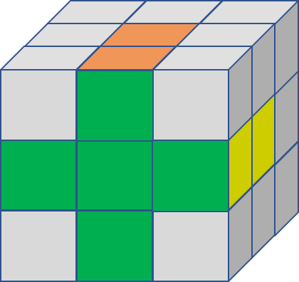
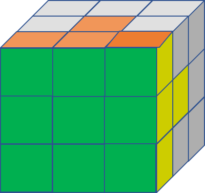
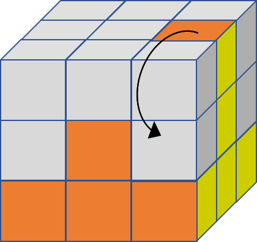
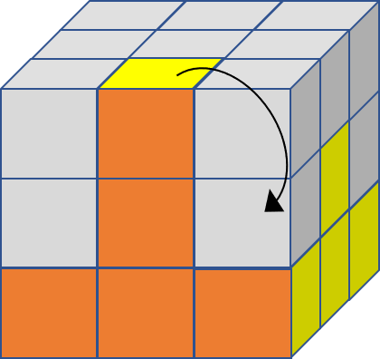
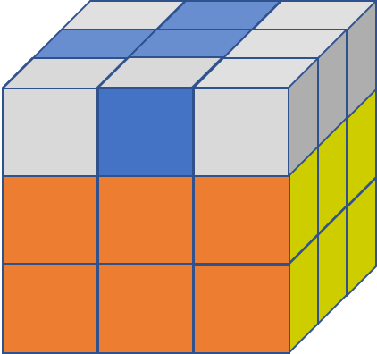
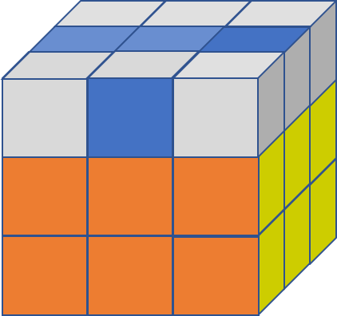

Rubik's Cube
Toy of the 1980s

How to Solve a Rubik's Cube:
A lot of people think they don't have what it takes to solve a Rubik's Cube. They couldn't be more wrong! It's all about perspective. The way I learned how to solve a Rubik's cube was to memorize algorithms, but at the time, I didn't truly understand all of it. After practice, I started to notice the patterns, and eventually I realized I could solve it no matter how it was given to me in the first place.
You will still need algorithms, but it's easier to understand these algorithms if you know what you're solving for. I'll give you a quick tip: it's not one face color at a time! I break it down to three main steps: bottom face and row, middle row, and top row and face. Let's take a closer look at the algorithms only in reference to which part of the cube for which we're trying to solve.
1. Bottom Face and Row
A. Bottom Face
- Cross: The side of the ends of the green cross should match their corresponding sides.
I usually start with the green side. I don't use any algorithms to get to this point. But I know there are some. If I have time, I will come back and add those above.
B. Bottom Row
- Corners: As you get your corners, you will see the entire green side completed along with the bottom row of each corresponding side.
Completing the entire green side in this way means that you would also complete the entire bottom row of the yellow, white, red, and orange sides (yellow and orange shown as an example).
2. Middle Row
Scenario 1
- Middle corner piece to the left: U' L' U L U F U' F'
In order to complete the middle row, you should move a corner piece of the middle row from the top as long as it has the correct colors. But there is a separate algorithm depending on which way you are moving the piece, left or right. Let's start with left.
Scenario 2
- Middle corner piece to the right: U R U' R' U' F' U F
The second scenario is very similar, but of course is solving for the corner piece of the middle row from the top but moving it to the right instead of the left.
3. Top Row and Face
Top Row and Face
- Top Cross: F R U R' U' F'
This part is trickist portion in my opinion. There are two main steps to getting this section complete, but they could be performed multiple times to get the proper result. Only one algorithm is used to get the top cross, but depending on what pattern is already there, you will need to use the algorithm one, two, or three times.
1
2
3
- Top Row Middle Pieces: R U R' U R U U R'
Even after you get the top cross, their corresponding middle pieces on the top rows of the side faces might not have matching color pieces yet. So there is another alogrithm for this case.

Top Row and Face
- Colored corner pieces: U R U' L' U R' U' L
- Matching the colors of corner pieces: R' D' R D
There are two steps to solving the corners of the top row. First, we must get the colors of the corner pieces in the right place, even if they are not matching their sides yet. Second, we can use the simplest algorithm yet to get these final corner pieces to have all their colors matching.

Feel free to learn more about the Rubik's Cube on Wikipedia.